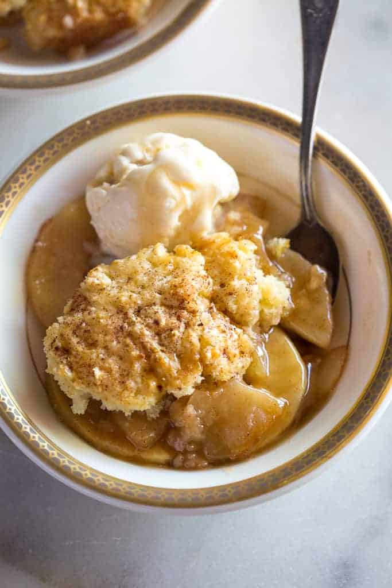

Quick Apple Cobbler

This is a very easy recipe made with simple basics you usually have
around the house. Perfect with after-dinner coffee or office pot-lucks.
My sons also like to top it with whipped cream or ice cream. Change it up
a bit by substituting a can of cherries or sliced peaches for a different
variety of cobbler.
Ingredients:
- One half cup melted butter
- One and one fourth cups sugar
- One cup all-purpose flour
- Two teaspoons baking powder
- Three-fouths cups milk
- One can sliced apples
- One teaspoon ground cinnamon
- One half cup water
Directions:
- Preheat oven to 350 degrees F (175 degrees C).
Pour butter into 9-inch round baking pan.
- Mix 1 cup sugar, flour, and baking powder together
in a bowl. Stir in milk. Pour batter into the baking pan.
- Arrange apples over the batter; sprinkle remaining 1/4 cup
sugar and cinnamon on top. Pour in water.
- Bake in the preheated oven until golden brown,
about 45 minutes.
Nutrition Facts:
Per Serving:
340 calories; protein 2.6g; carbohydrates 56.7g; fat 12.5g;
cholesterol 32.3mg; sodium 215.9mg.